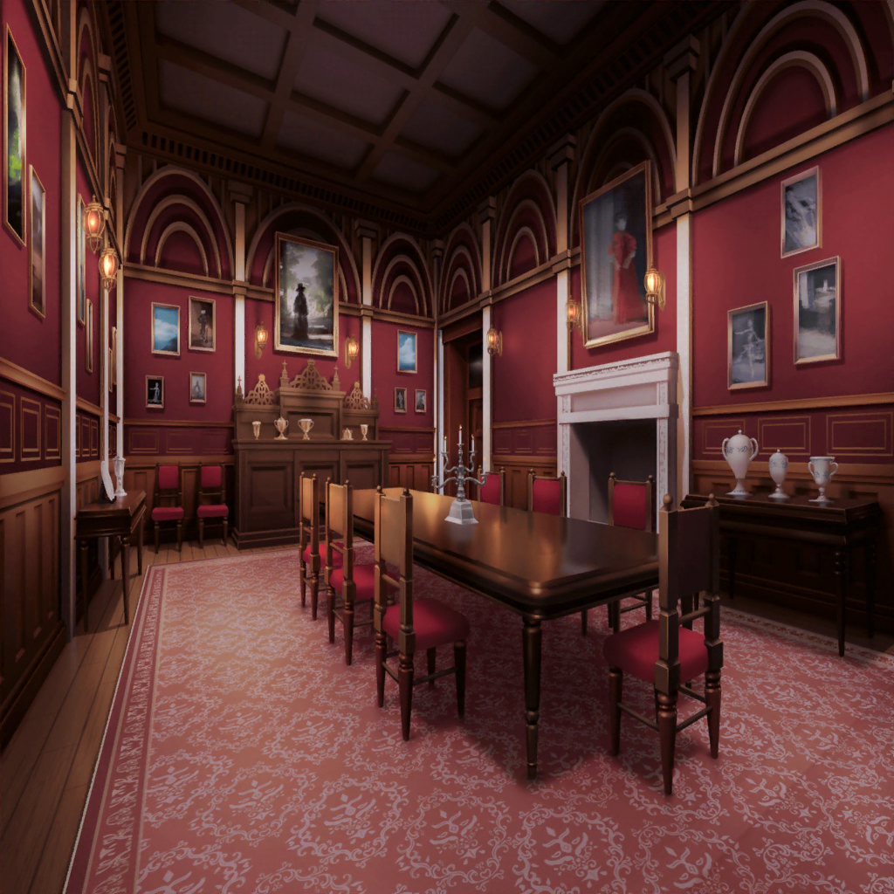

ロケ 終了後
大広間
イヴ
わあ……！ どのテーブルもご馳走でいっぱいですね！
とっても美味しそうです……
麻弥
しかも、食器やテーブルクロスまで、ハロウィン仕様なんですね。
すごい凝りようです……
千聖
これだけ徹底されていたら、
泊まりに来たお客さんも、きっと喜ぶでしょうね
彩
うんうんっ！
クリスマスとかなら、また別の食器になるのかなあ？
想像するだけでも、楽しくなっちゃうね！
日菜
みんな！ これ、見て！
彩
わあ……！
かわいいデザートがいっぱい！
麻弥
このテーブルのデザートは全部カボチャを使ったもの
みたいですね。色鮮やかで見てるだけで楽しくなっちゃいます！
イヴ
カボチャプリンや、カボチャのタルト……
どれもとっても美味しそうですね！
彩
どれもおいしそう〜！
どれから食べようかな〜？
日菜
彩ちゃんはカボチャの料理食べちゃダメだよ？
彩
な、なんで？
日菜
だってカボチャの服着てる彩ちゃんが、
カボチャ料理食べたら、共食いになっちゃうじゃん！
彩
ううっ……そう言われると食べづらいよ〜……
千聖
彩ちゃん、ちゃんと量を考えて食べてね
彩
千聖ちゃんまで……！
イヴ
みなさん、みなさん！
このマフィン、ふわふわでとっても美味しいですよ！
日菜
ほんとっ！？
……わー！ いちごジャムが入ってるんだ！
イヴ
はい！ 甘さ控えめで何個でも食べられちゃいます！
千聖
ふふ、イヴちゃん、ちょっといらっしゃい
イヴ
なんですか、チサトさん？
千聖
……ほら、口元にいちごジャムがついてるわよ
イヴ
ほ、ホントですか？
うう、恥ずかしいです……つい夢中で……
日菜
あはは、今のイヴちゃん、
本物のヴァンパイアみたいだったね！
麻弥
ワイングラスとか持ったら、もっと雰囲気が出るかもしれません！
イヴ
ヒナさん、マヤさん、
からかわないでください〜！
彩
そうだ！ この衣装でいられるのもあと少しだし、
みんなでそれっぽいポーズで写真撮ろうよ！
日菜
うん、いいよ！
あたしは小悪魔か〜。どんな感じがいいかなあ？
麻弥
うぅ……それっぽいポーズとなると、
今度はジブンが恥ずかしくなってきました……
彩
よーし、これでおっけー！
あとでグループチャットに写真上げておくね！
日菜
はー、今日はすっごく楽しかったねー！
ロケのお仕事も、この時間も！
イヴ
うう……
麻弥
イヴさん、どうしました？
イヴ
あ、いえ……ハロウィンロケの企画が終わって、
これで今日のお仕事は、おしまいなのかと思うと……
イヴ
楽しかったその分……
みなさんと別れるのが寂しくなってしまって……
彩
そうだよね。１日ずーっと一緒だったもんね
麻弥
……あれ、お二人とも聞いてないんですか？
彩
ん？ 何が？
千聖
このあと、元々予定していたホテル内を
紹介する撮影もあるから、今日は泊まりのはずよ
彩
あ、あれ！？ そうだったっけ。
えへへ……謎解きに夢中で忘れちゃってたかも
イヴ
それじゃあ今日は、
ずっとみなさんと一緒にいられるってことですね！
彩
やったねイヴちゃん！
みんなと話したい事、いーっぱいあるんだ！
イヴ
はい、私もです！
チサトさんの活躍や、マヤさんのニンジャのような動きなど、
お伝えしたいことが、たくさんです！
千聖
ふふ、二人とも嬉しいのはいいけれど、
ちゃんとお仕事も頑張りましょうね
イヴ
もちろんです！
みなさんと一緒なら、なんだって頑張れます！